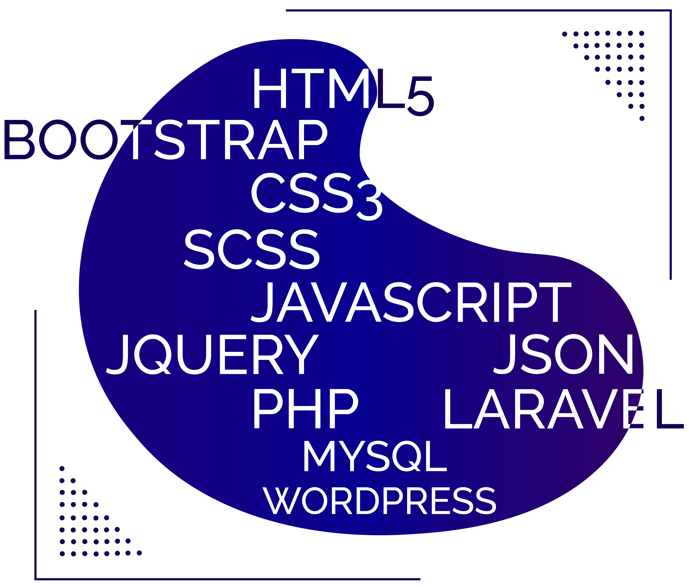

Mi nombre es Darinel Nieto Diaz, tengo 26 años, nací en Cartagena-Bolívar, en el año 1994. Actualmente resido en Medellín-Antioquia desde el año 2014, tengo un hijo de dos años, convivo con el y la madre. Soy desarrollador web con un año de experiencia, mis estudios no los pude realizar en una universidad como todos quisieran, porque mis horarios de trabajo no me lo permitían y por falta de dinero para poder suplir los gastos que requería estudiar en una universidad. La manera en que me prepare como desarrollador web, por medio de cursos grabados que un amigo me compartió y por investigaciones que realice. La forma de dar a conocer mis capacidades es a través de este mi portafolio de trabajo personal.
ABOUT ME
SKILL
A lo largo de todo un año activo como desarrollador web, he adquirido grandes habilidades en los lenguajes de desarrollo y programación web como lo son: Html5, Css3, Javascript, Jquery, php, Scss, Bootstrap, Wordpress, Laravel, Angular, Ajax para realizar consultas a apis y Json para recibir los datos de respuesta de la consulta y envíar datos en Json, crear bases de datos MySQL, crear plugins para Wordpress. Gran parte de mi experiencia laboral ha sido creando sitios web en Wordpress (páginas web y tiendas online).